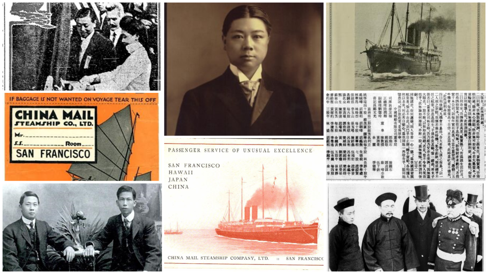
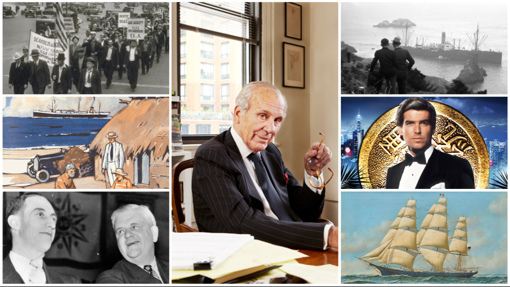

An American Flag on the Pacific: The China Mail Steamship Company
The story of Chinese American merchants who launched an ambitious trans-Pacific steamship company in 1915.
Read the ArticleA history of Pacific trade, from the Bay Area outward
If you have memories, insights, or source materials to share for this project, please get in touch.
A presentation at the San Francisco Maritime National Historical Park Research Center about the China Maritime Museum in Shanghai.
A Mandarin presentation about the steam schooner J. B. Stetson, subtitled in English.

The story of Chinese American merchants who launched an ambitious trans-Pacific steamship company in 1915.
Read the Article
A story of the Lapham and Dearborn families, American-Hawaiian Steamship Company, and the ways history shapes the future.
Read the ArticleThe following timeline documents milestones in the history of Northern California's transportation industry and its ties across the Pacific. Understanding how this trade was built, and by whom, shapes how Tri-Stone approaches the trade being built today. This is an ongoing research project. If you have memories, source materials or insights to share, please get in touch.
The roots of the Pacific Transportation Association lie in the Traffic Association of California, formed in the late nineteenth century by James B. Stetson to coordinate shipping practices along the Pacific Coast. The organization brought together shippers operating between California ports.
The Transportation Club of San Francisco, an organization composed of representatives of all the railroads and steamship companies doing business on the Pacific Coast, is organized.
In 1915, a group of Chinese American merchants in San Francisco launched an ambitious new steamship company in the trans-pacific trade. With capital supplied by some 20,000 enthusiastic investors, their goal was to build a company that could serve Chinese passengers and merchants with greater dignity and establish an independent stake in the routes linking California with Asia.
The first class of Transportation and Traffic Management begins at 1337 Sutter Street under the University of California Extension Division, marking the formal educational foundation of what would become the Pacific Traffic Association. The inaugural course concludes with the first class banquet on December 14, a foundational moment in the history of the association.
The organization is renamed from the University of California Traffic Association to the Pacific Traffic Association (PTA), reflecting its broader regional identity.
During one of the earliest "Steamship Nights" aboard a Matson liner at Pier 30, Prohibition enforcement agents raid the gathering.
San Francisco hosts the opening of the Sixth Annual Convention of the Associated Traffic Clubs of America.
In 1934, the Association launched Western Transportation, a twice-monthly publication chronicling the Association’s activities and members, and general news about shippers and the steamship, trucking, railroad, and warehousing industries. The publication was retired in the mid-1980s.
Eight women attended the first meeting in 1981, marking the founding moment of Women in Transportation, the organization that would later become Women in Logistics.
On January 1, 1988, our name was changed to the Pacific Transportation Association. The word Transportation better depicts the roster of prominent companies and persons from the Bay Area who utilize ocean, air, rail, and truck transportation.
Literary magazine Lapham's Quarterly was founded by Lewis H. Lapham, whose great-grandfather Lewis Henry Lapham was a founding investor in the American-Hawaiian Steamship Company.
This timeline is part of an active research project to document the full history of the Northern California transportation industry. If you have memories, documents, or stories to share, your input would be invaluable. Please reach out at pierce@tristonetrade.com.
HistoryFrom history to today. The same routes that carried California goods to Asia a century ago are open to Bay Area producers now. Learn how Tri-Stone helps →